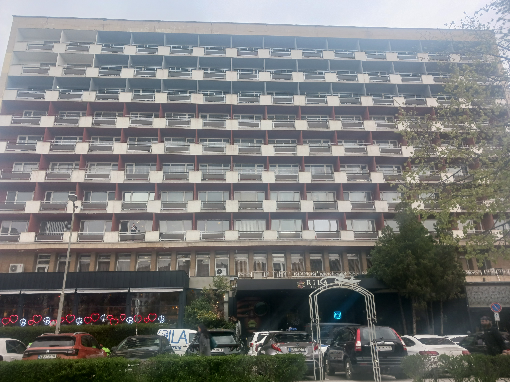
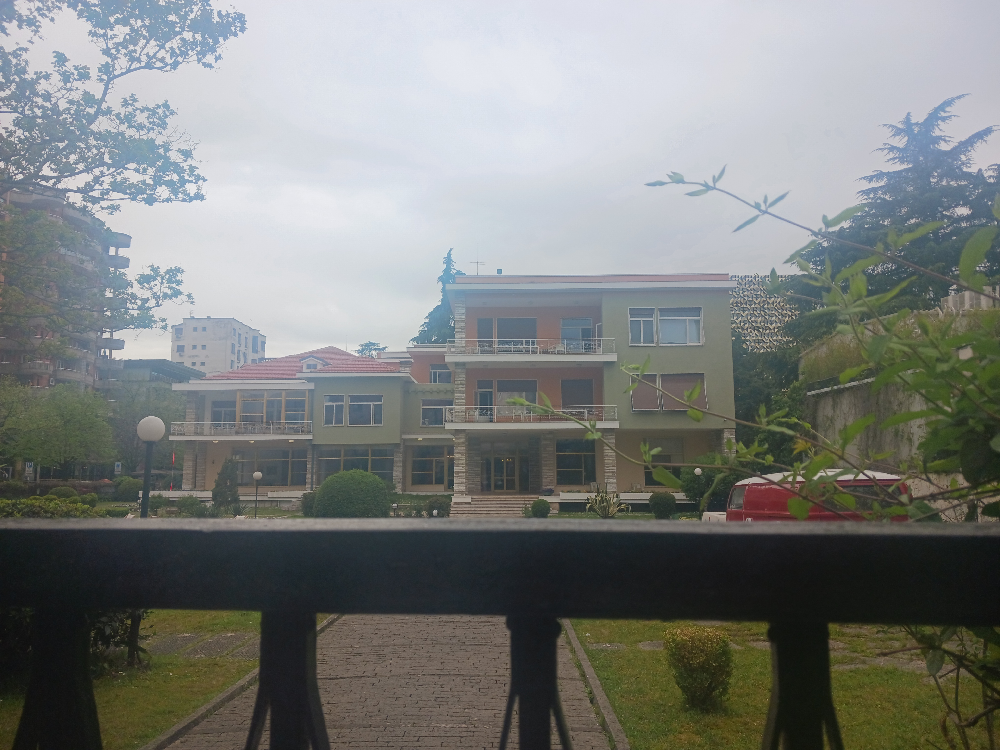
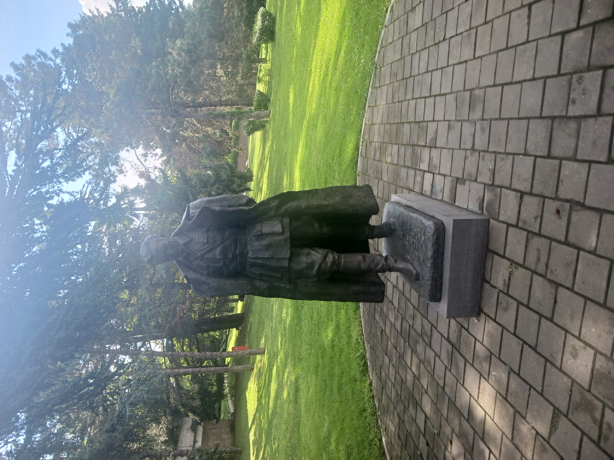
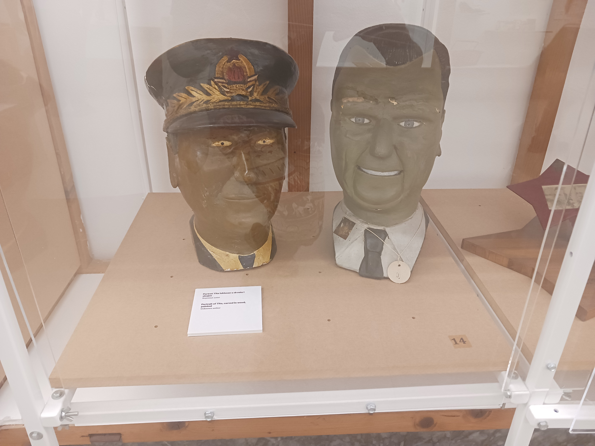
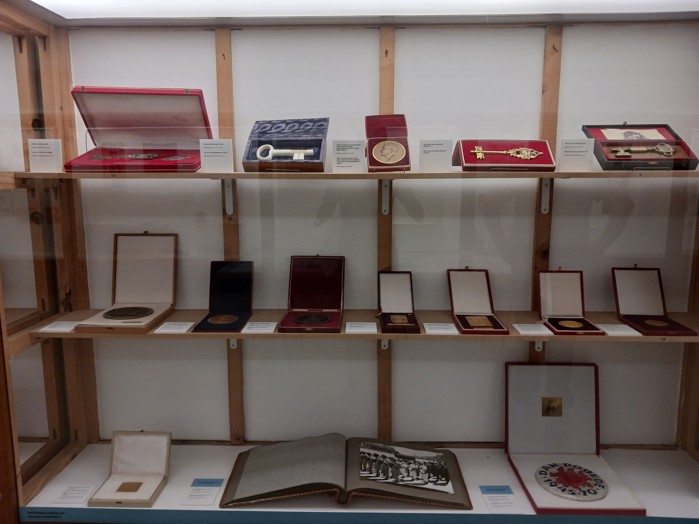
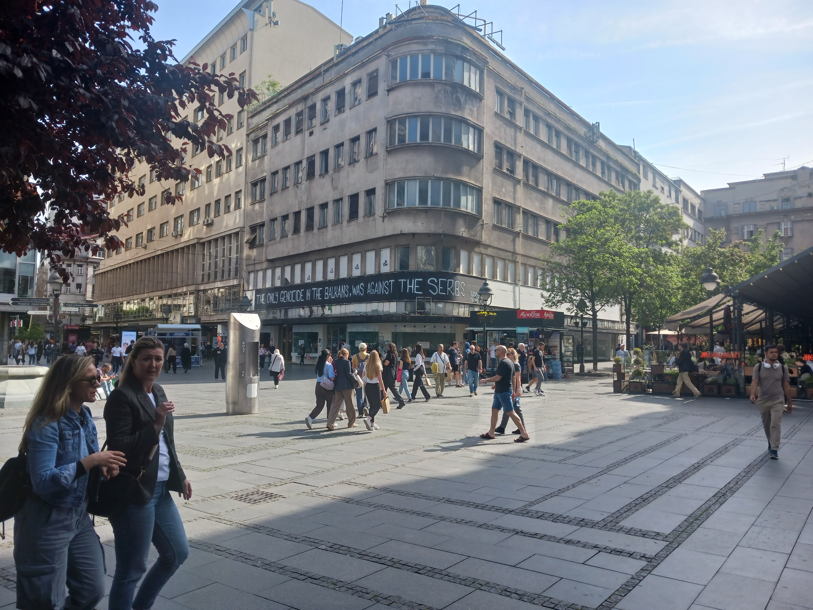
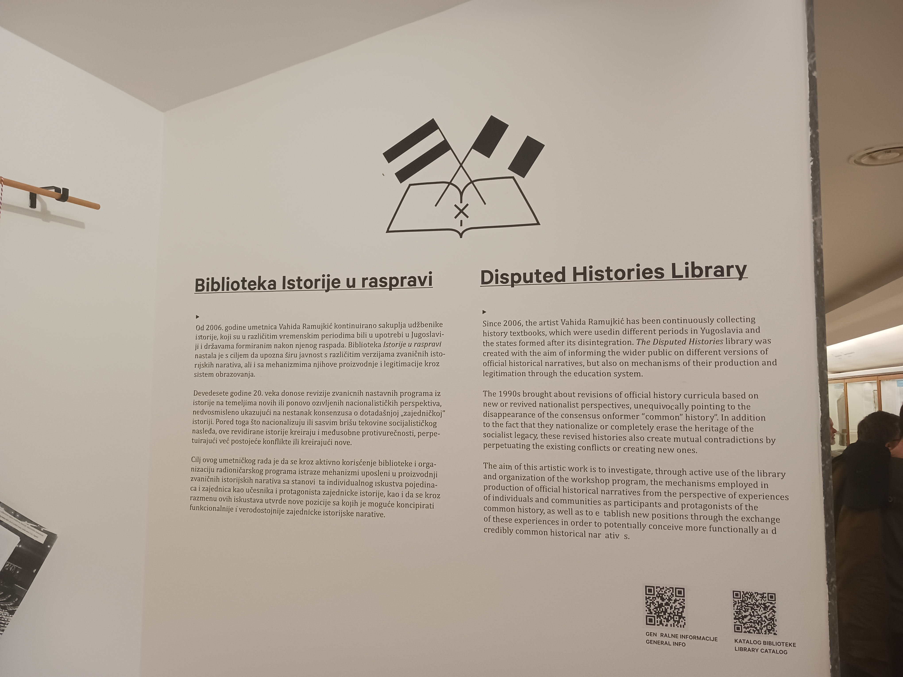

Bulgaria
The communist period in Bulgaria (1944-1989) was a polarizing time - people either loved or hated it (generally depending on how they and their family were personally impacted). Communism did offer several significant benefits - literacy rates skyrocketed, the state guaranteed employment and housing, and the government enforced wage equality for men and women (i.e., equal pay for equal work). On the other hand, whether you were happy with your job and where you lived was inconsequential, and while you had what you needed, it could be reallocated at any time to suit the needs of the state (as in, imagine being told one day that you can no longer enter a section of your home because it's been assigned to another family).
Generally, faith in or knowledge of anything outside of the state (religion, international affairs, etc.) was highly discouraged. To that end, many places of worship were destroyed during the communism era, and worshippers were forced to practice in secret. There was one (state-run) news channel, and media was heavily controlled - as an example, Bulgarians weren't informed about the Chernobyl disaster and resulting fallout until they'd already been exposed to it.
Albania
Communism in Albania was brutal - the country was under the control of dictator Enver Hoxha, who isolated citizens both geographically (Albanians were forbidden from leaving, and there was an electric fence around the border to enforce that) and mentally (people were encouraged to report on their neighbors for basically any reason, which created a low-trust environment). To this day there's still a strong distrust of government, though that's likely more to do with recent corruption allegations than past misdeeds.
While Albanians were standing in ration lines, Hoxha was spending the country's money on bunkers to "protect from the enemy" (largely a fabrication of his paranoia). Many of these were never used, but some have since been repurposed into museums, wine cellars, and even bat caves.

Serbia
The Museum of Yugoslav History in Belgrade pays homage to the fact that Belgrade was the seat of Yugoslavia's government. While there we did a deep dive into Josip Broz Tito, president-for-life of Yugoslavia.



Apparently Tito was a larger-than-life figure - charismatic and with a masculine air to him. He was also quite popular internationally, considering the number of gifts and awards he received from foreign leaders during his tenure. His death in 1980 triggered a seven-day national mourning period and the beginning of the end for Yugoslavia - he was able to keep the nationalist tensions at a simmer, but when he died left behind big shoes to fill, and while several tried to be "Tito after Tito", ultimately none were successful.
After Tito's death, more information about the (poor) state of Yugoslavia became public. During this trip I learned there were also concentration camps in Yugoslavia - similar to Albania, citizens would report on each other (apparently just suggesting that someone was "for Stalin" would suffice) and be disappeared in mass numbers, never to be seen again. I hadn't heard about this before, but it seems like a sensitive issue - my tour guide compared this to the Srebrenica massacre (a major impetus for NATO involvement in the Bosnian War), which he acknowledged was a war crime but stopped short of calling a genocide. He seemed frustrated that the labor camps (i.e., the time Serbians were the main victims) aren't as well-known and don't spur as much sympathy.
In the end, opinions on communism largely seem to depend on you or your family's experience with it, who you learned your history from and any biases they may hold, and how strong your nationalist tendencies are. There have been attempts to either rewrite history to make events more palatable for a given audience, delete or remove reminders of that time (because they were considered too traumatic), or ignore it altogether. It's a hard balance - it's important to acknowledge and remember the past, but equally as important to let people move forward from painful memories.
What have we learned?*
Something I've been thinking a lot about since I came back is how people interacted with each other during the communism era (aside from the state-sanctioned spying and citizen policing). I'm mainly thinking in terms of if/how one could satisfy humanity's innate need for self-actualization, establish a sense of self, or gain some level of standing in their community, given the forced equality of communism. Essentially, my thesis question is:
In the US, today's society would have us believe the answer to this question is "have a lot of money" or "own nice things". I don't think either of those are the right answer, but even if they were, that wouldn't have been feasible in a communist system given the state determined where you lived, what job you had and how much you were paid, etc.
I also wonder how much state interference impacted one's life goals and pursuits. State-sponsored activities were likely on the path of least resistance logistically, and you might receive a certain level of prestige for completing them, but that's not the same as doing something because you want to. Similarly, how much of the external validation one received from their community be trusted? Are people telling you what they genuinely think, or are they regurgitating the state-sanctioned opinion about that activity? The latter is certainly the safer option, especially in the context of a society where one could be whisked away to a labor camp based on a single rumor...more research needed.
In short, I'm hardly an expert on communism now, but this trip was a great primer and has given me a lot to think about.